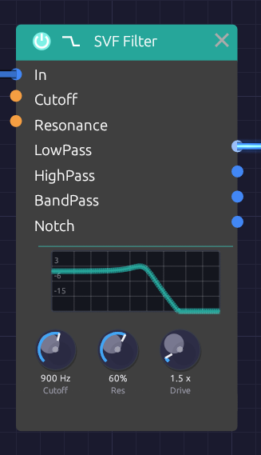

SVF Filter
Module ID filter.svf · Category Filter

The response curve on the node is computed from the filter itself, so it matches what you hear.The SVF (state variable filter) is the all-purpose filter: one input, four outputs, all running at once. LowPass darkens, HighPass thins, BandPass keeps a band around the cutoff and Notch takes one out. Patch whichever you need, or several at once, without switching modes.
It is a 12 dB/octave filter with an analog-style resonance. Turn the resonance up and the peak grows and saturates rather than getting louder without limit; turn it all the way and the filter sings on its own as a clean sine at the cutoff. Cutoff moves in octaves, so a sweep sounds even from bass to treble, and it stays stable right up to 20 kHz.
For a thicker, steeper lowpass, see the Ladder Filter.
Inputs
| Port | Signal Type | Description |
|---|---|---|
| In | Audio (Blue) | Audio to filter |
| Cutoff | Control (Orange) | Cutoff CV, 1 per octave: +1 doubles the cutoff, -1 halves it. The same scale as V/Oct, so a keyboard's pitch tracks directly |
| Resonance | Control (Orange) | Adds to the Res knob: +1 adds 50% |
Cutoff and Resonance modulate around their knobs. The knob sets the center, and stays live while a cable is patched in.
Outputs
| Port | Signal Type | Description |
|---|---|---|
| LowPass | Audio (Blue) | Passes frequencies below the cutoff |
| HighPass | Audio (Blue) | Passes frequencies above the cutoff |
| BandPass | Audio (Blue) | Passes a band around the cutoff |
| Notch | Audio (Blue) | Removes a band around the cutoff and passes the rest |
Parameters
| Knob | Range | Default | Description |
|---|---|---|---|
| Cutoff | 20 Hz – 20 kHz | 1000 Hz | Where the filter starts cutting |
| Res (Resonance) | 0 – 100% | 50% | Peak at the cutoff. Self-oscillates above about 97% |
| Drive | 1x – 10x | 1x | Input gain into a soft saturator, for warmth and grit |
The four outputs
LowPass is the classic subtractive synth filter. It rolls off everything above the cutoff at 12 dB per octave, taking the edge off a bright oscillator. Most patches start here.
HighPass is the mirror image: it removes everything below the cutoff. Use it to thin a sound out, clear rumble, or leave room for a bass part.
BandPass keeps a band around the cutoff and rolls off both sides. The band narrows as resonance rises. It gives vocal, nasal and telephone-like tones, and swept by an envelope or LFO it becomes a wah.
Notch removes a band around the cutoff and leaves the rest. The notch is deepest exactly at the cutoff and narrows as resonance rises. It equals LowPass and HighPass added together. Swept slowly, it gives a phaser-like movement that hollows a sound without darkening it.
Resonance and self-oscillation
Resonance feeds part of the filter's output back into itself, which adds a peak at the cutoff. A little (20 to 40%) adds character; a lot (70 to 90%) gives the squelchy, whistling peak of an acid bassline. The feedback runs through a saturator, so a loud input at high resonance pushes back instead of running away.
Above about 97% the filter self-oscillates:
- It produces a sine at the cutoff frequency, with nothing patched into In. The oscillation grows out of a tiny noise floor, like circuit noise in an analog filter.
- The pitch lands within a few cents of the Cutoff knob, so the knob reads as a pitch.
- The saturator holds the level at about -12 dBFS.
- Patch a keyboard's Pitch into Cutoff and it plays in tune.
Feed audio in while it oscillates and the two interact, with the resonance pushing back against loud input.
Drive
Drive raises the level into a soft saturator before the filter. At 1x it is nearly clean. Turning it up thickens the sound and then adds grit, and the louder signal also pushes harder against the resonance.
Patch examples
Basic filtering
[Oscillator Out (Saw)] ──> [SVF Filter In]
[SVF Filter LowPass] ──> [VCA In] ──> [Audio Output]
Start with the cutoff around 1000 Hz and Res at 20 to 40%, then turn the cutoff down for a darker sound.
Filter envelope
[Keyboard Gate] ──> [ADSR Gate]
[ADSR Out] ──> [SVF Filter Cutoff]
Set the Cutoff knob low (200 to 500 Hz). The envelope's 0-to-1 output raises the cutoff by up to one octave as it plays, so the knob sets where the sweep starts and the envelope carries it an octave higher. Add resonance to make the sweep more pronounced. A fast attack and decay gives a pluck; a slow attack, a swell.
Keyboard tracking
[Keyboard Pitch] ──> [Oscillator V/Oct]
──> [SVF Filter Cutoff]
The filter follows the notes you play, so high notes are as bright as low ones. The Cutoff input uses the V/Oct scale, so no scaling is needed.
Parallel modes
[Oscillator Out] ──> [SVF Filter In]
[SVF Filter LowPass] ──> [Mixer Ch 1]
[SVF Filter BandPass] ──> [Mixer Ch 2] ──> [Audio Output]
Blending lowpass with a little bandpass gives body plus a resonant edge.
Moving notch
[Oscillator Out (Saw)] ──> [SVF Filter In]
[LFO Out (slow)] ──> [SVF Filter Cutoff]
[SVF Filter Notch] ──> [Audio Output]
A slow LFO sweeping the notch gives a phaser-like whoosh.
Polyphony
The SVF Filter is polyphonic. Each voice on a polyphonic cable gets its own filter, with its own resonance, so a chord into In with an envelope on Cutoff opens each note separately. The knobs are shared by every voice. See Polyphony.
Bypass
Click the power switch at the left of the header, choose Bypass from the module's right-click menu, or press Ctrl + B to take the filter out of the signal path. All four outputs then pass In straight through, and the header and controls dim. Switching takes a 20 ms crossfade, so it doesn't click.
Related modules
- Ladder Filter, the steeper, saturating lowpass
- ADSR Envelope to sweep the cutoff with each note
- LFO for wobbles and phaser sweeps
- Attenuverter to narrow or invert a cutoff sweep